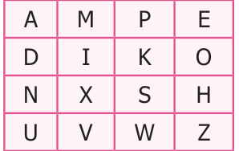
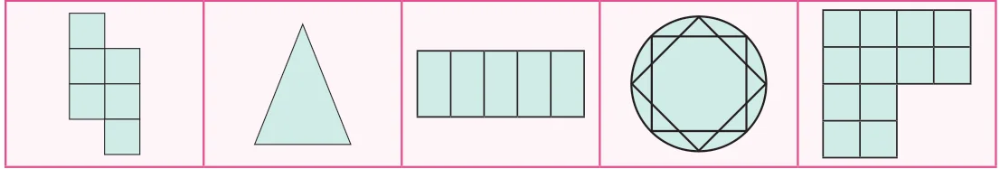
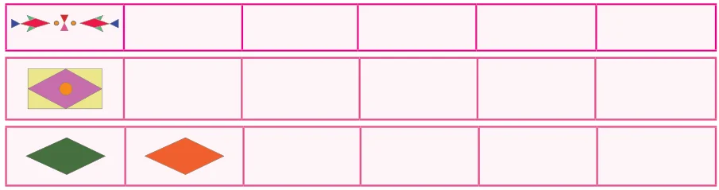
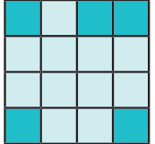
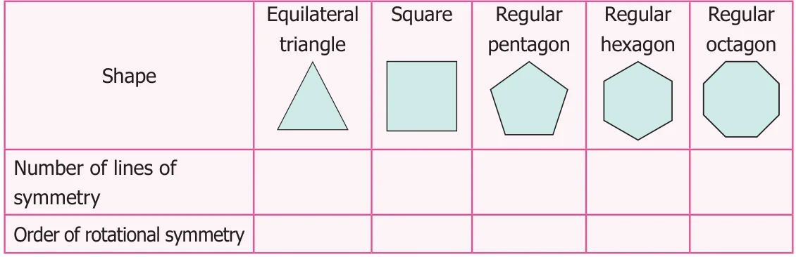
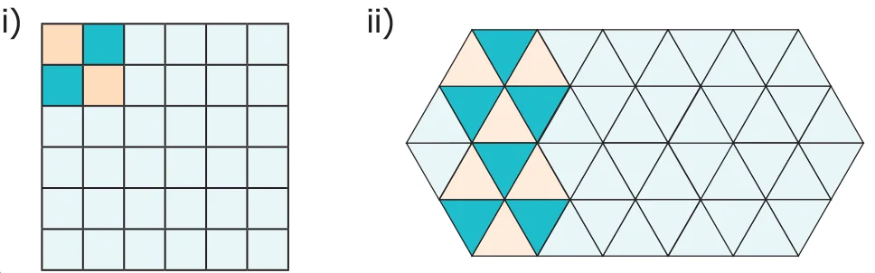

Exercise 4.2
Miscellaneous Practice Problems
- Draw and answer the following.
- A triangle which has no line of symmetry
- A triangle which has only one line of symmetry
- A triangle which has three lines of symmetry
- Find the alphabets in the box which have
- No line of symmetry
- Rotational symmetry
- Reflection symmetry
- Reflection and rotational symmetry

- For the following pictures, find the number of lines of symmetry and also find the order of rotation.

- The three digit number \(101\) has rotational and reflection symmetry. Give five more examples of three digit numbers which have both rotational and reflection symmetry.
- Translate the given pattern and complete the design in rectangular strip?

Challenge Problems
- Shade one square so that it possesses

- One line of symmetry
- Rotational symmetry of order \(2\)
- Join six identical squares so that atleast one side of a square fits exactly with any other side of the square and have reflection symmetry (any three ways).
- Draw the following :
- A figure which has reflection symmetry but no rotational symmetry.
- A figure which has rotational symmetry but no reflection symmetry.
- A figure which has both reflection and rotational symmetry.
- Find the line of symmetry and the order of rotational symmetry of the given regular polygons and complete the following table and answer the questions given below.

- A regular polygon of \(10\) sides will have \(\underline{\qquad}\) lines of symmetry.
- If a regular polygon has \(10\) lines of symmetry, then its order of rotational symmetry is \(\underline{\qquad}\)
- A regular polygon of '\(n\)' sides has \(\underline{\qquad}\) lines of symmetry and the order of rotational symmetry is \(\underline{\qquad}\).
- Colour the boxes in such a way that it posseses translation symmetry.
